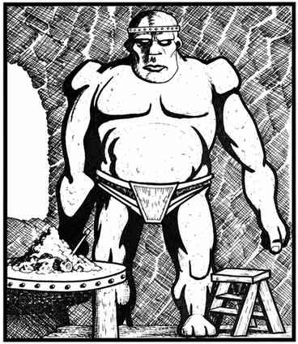

黏土魔像 · Clay Golem
 |
|
17 级或更高的守序善良牧师可以创造黏土魔像；若借助魔法典籍，所需牧师等级可更低。创造仪式需要“复活术”“操纵物体”“神谕术”“祈祷术”与“祝福术”。牧师必须先塑造一尊人形黏土雕像，再不间断地完成上述法术仪式。材料至少花费 20,000 金币，仪式法衣另需至少 30,000 金币。
黏土魔像受创造者牧师控制。它每参与一个近战轮，便有 1% 的累积概率被混乱邪恶灵体附身。一旦发生，魔像立即脱离控制，攻击眼前最近的活物；杀死后便继续攻击下一个，直到自身被摧毁，无法重新控制。黏土魔像对生物造成的伤害，只能由 17 级或更高牧师施展“治疗术”修复。
黏土魔像的攻击按 11 颗生命骰计算。每天一次，它在至少经历 1 个近战轮战斗后可加速 3 个近战轮；加速期间每轮攻击两次。失控的魔像若当天尚未使用此能力，会立即自行加速。
只有锤、钉头锤等钝击类魔法武器能击中黏土魔像，其他武器均无效。法术通常也无效，例外如下：“移土术”会将其击退 12 寸并造成 3–36 点伤害；“解离术”会令其速度减半并造成 1–12 点伤害；直接对其施展“地震术”会使它当轮无法移动，并造成 5–50 点伤害。